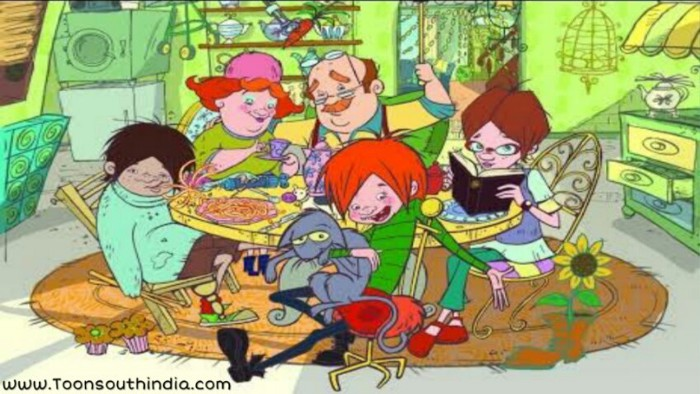

Hello Offsiders….thanking you….for which you are going to spend your lecture time to read this…… and I Hope it wont be boring for you….
This is krishnapriya….a very simple girl from a cute family with a father and mother…and also god has gifted me two most beautiful siblings with me whom are my elder sister and my elder brother....yes and my 1st cry on 10th June 2001….
I must always thanks to god to give me such a sweet mother like my AMMA(mother)…because in all my ups and downs she will be their with me to bring me up…coming to my APPA(father) a very Straight person with lots of love…my age is 19.still now i haven’t convey with my father which i want to…only a simple bond is between us…and i have felt very bad for this many times…then coming to my sister and brother they two were not much close to me so i am not much experienced the love of siblings….OK OK cool buddies….no more talk about my family
Got a nice school and finished my school life and i am doing my UG degree…simple i just want to say something which i have experienced in my life and i don’t no whether you have interest to read but please spend some time to read this… and i must thank to this plate form to give me this opportunity to share this message.
Simple thing which i used to think always is “WHY WE BOYS AND GIRLS ARE SEARCHING MISTAKES ON EACH OTHER AND MAKING OURSELVES DOWN”…This universe is common to all.And each and every little thing deserves its own place.then what for we are making complaints on each other and blaming each Other.we have only one life we are not sure about our next birth. thus make use of this Precious life which got has gifted us….
YOU MAY BE A RICH PEOPLE
YOU MAY BE A MIDDLE CLASS PEOPLE
YOU MAY BE A LOW CLASS PEOPLE
what ever it may be the thing is how we are leading our life and facing the problems.and one more thing i just want to convey is in our today generation making fun on others is a easy.even my self will do that its not a bad thing but its should not hurt the others.don’t think i am just advising but these are the little things which we are doing as a mistake
last and the foremost thing which i want to convey is”please help the needy”
Because it may be a waste thing for us but its a precious gift for them to use….if some one ask you food kindly give and help them..with the thing which you have.help the poor without any expectation.surely it will be back to you 1 day
“A PERSON BECOMES 10 TIMES MORE ATTRACTIVE NOT BY THEIR LOOK BUT BY THEIR ACT OF KINDNESS,HONESTY,RESPECT AND THE LOYALTY THEY SHOW”
My hearty thanks to every one who took your time to read my blog.these are the things which i want to convey to many ones but i can’t…and i think at least a small thing will hit you and make you to do good things.thank you every one.
EvErGrEeN GlOrIyA…
june 13,2020
Helo amigo’s….a warm welcome from krishnapriya…thanks for study monk to give as this wonderful opportunity to share our wonderful childhood memories about the cartoons. and I’m very glad to say that ma favorite cartoon is ‘GLORIYAVIN VIDU’ and also ‘GEE BOOMBAA’. these are the two cartoons which made ma childhood awesome. still now when ever I look at it I fell very happy.
Gee Boombaa
“AAKU PAAKU VETHLA PAAAKU GEE BOOMBA KANNU ITHA VACHI PANNA PORA MAGGIC ONNU”
Because its very hard thing for me to see cartoon in my home. always my brother used to watch me whether I am seeing cartoons are not if he finds me then there will be a tom and jerry fighting will take place. these are ma golden memories which I had in ma childhood days.

Gloriyavin Vidu
“LALA LAALA LAALA LA”that song…….
These are my favorite cartoons which I have been seen in my childhood days. thank you for your patience to read this one. tata guys
ThE BiG ShOrT
june 23,2020
Great drama moves you. It excites you. Scares you. Makes you sing. Makes you cry
The Big Short makes you shake your fist. The Big Short is driven as much by its Iago as it is its Othello, and deservedly so
The events in the story did happen. Many people still don’t care. The Big Short gives you reason to care. That is what separates this film from being merely a documentary and turns it into high drama.
No matter your politics — mark this, like Citizen Kane, as a movie that should be seen at least once. It is not always comfortable to watch. And that is a good thing — The Big Short is a documentary of a real life horror that unfolds in slow motion, and reminds us that even after the fact — no one is listening. Because truth is like poetry
This film is very unusual in that the producers have shown fierce determination in taking a serious topic and making it as user friendly as one possibly can. Multiple techniques are used to this end and they all work well. In fact in places the film has a Monty Python quality. Why was this done? One can only assume that the producers understood the multiple studies showing that the modern city-dweller becomes uncomfortable when confronted with any facts which suggest that he or she was not paying attention when bad things were happening. After all we live in a democracy so the voters should have been more alert? Isn’t that their job? The techniques mentioned attempt to appeal to our SESAME STREET side and make the whole thing as pleasant an educational experience as possible. But make no mistake, this is an educational movie.
One that should be mandatory for adults. Like getting a driving test before a license. How about learning about Wall Street and the banks before you invest with them…? Carell steals the film and may finally get the attention he deserves. Great actor.
the big shot
The Big Short is not an easy film to watch on a number of levels. At a basic level, and speaking as a pretty well-educated film-goer, it requires quite considerable concentration to keep up with the financial jargon thrown at you. At a sociological level, the fraud and corruption that were endemic within the venerable institutions portrayed is just unbelievable. And at a personal level, as someone who lost big time when a property deal in Florida went South, some of the scenes are physically painful. But I was lucky in comparison: my loss was ‘just’ money. Many millions of Americans and then, through the global recession, many millions more around the world lost their jobs and their homes through the ensuing collapse. And for many, that led to loss of life
It’s 2005 and Christian Bale plays Dr Michael Burry, a character whose manner suggests he might be high on the autistic scale. Burry appears to be solely in the driving seat of a huge investment fund — in itself, a surprising fact. Burry sees what no one else has seen — that the whole of the US mortgage market is built on a lie; a lie that the banks and even the supposedly independent financial ratings companies are complicit in for their own short-term gains. Burry is effectively the small boy laughing at the emperor’s new clothes: but going beyond that, he bets all of his company’s investments on that radical view.
We also follow two parallel but unconnected groups chasing the same bet after hearing of Burry’s ideas: struggling broker Jared Vennett (Ryan Gosling) brings the proposition to a team led by Mark Baum (Steve Carell). Baum is a disillusioned and self-righteous professional struggling with his own personal tragedy. On investigating the depth of the crisis, Baum progresses through incredulity to increasing anger; and Charlie Geller (John Magaro) and Jamie Shipley (Finn Wittrock) are two up-and-coming youngsters who team with grizzled and retired veteran trader Ben Rickert (Brad Pitt) to help leverage their limited funds into the game.
The chips are down and as the financial world turns increasingly toxic there are two questions to answer: a) who blinks first between the serried ranks of the institutions, desperate to maintain the status quo, and the maverick brokers; and b) when the music stops, will there actually be any pot left to win? The director is Adam McKay (“Anchorman”, “The Other Guys”) and his style is both quirky and brilliant — well deserving of his place among the Oscar contenders. We keep breaking away from the action to get insightful explanations from some surprising people (some who make it extremely difficult to concentrate on the message!). The fourth wall is constantly being broken to comic effect, particularly by Gosling who is a pseudo-narrator at times. This is a dangerous ploy for a movie, as this type of narration can be highly irritating to an audience (e.g. as in “Joy” and “Jersey Boys”), but here it works brilliantly. Clever interweaving of newsreel and media footage, and some extremely sharp editing (a well deserved Oscar nomination for Hank Corwin) add to the magic.
The script by Adam McKay and Charles Randolph (gaining another Oscar nomination for Best Adapted Screenplay) makes an impossibly complex concept more accessible without resorting to Sorkin-levels of verbosity.
Christian Bale, surely one of the most unpredictable and charismatic actors today, is also in contention for a Best Supporting Actor Oscar, but that belies the stupidity of these categories: who is the “Lead” actor in a film like this? Outside of that debate this is a film which, as for “Spotlight”, could be considered for an award for “ensemble cast”. In a movie with great cameos from the likes of Melissa Leo, Karen Gillan (“Dr Who”) and Marisa Tomei, it is Steve Carrell in particular who stands out as a dramatic force, following up the impact he made in last year’s “Foxcatcher”
An extremely entertaining, yet intellectually demanding film, this is a one deserving of multiple watches to help unpeel the onion of understanding. The year is yet young, but this rates as one of my films of the year so far.